SELECT * 미사용) · DB 프로그래밍 주석 처리(모든 SQL 파일에 병목·튜닝 근거 주석)측정 방법 및 유의점 — 본 데이터는 소규모(orders 6,770·order_items 18,393)라 절대 실행시간이 수 ms대이며, EXPLAIN ANALYZE의 행별 계측 오버헤드로 캡처 이미지의 실행시간은 실제보다 부풀려지고 실행마다 편차가 크다. 따라서 각 문항의 튜닝 효과는 실행계획 노드(스캔·조인·정렬)·버퍼·접근 행수의 변화를 핵심 근거로 판단하였고(EXPLAIN ANALYZE, BUFFERS), 실행시간은 CLI에서 반복 측정한 정상상태 대표값(종합 요약 표)으로 별도 표기한다. 이 이득은 데이터가 커질수록 확대된다.
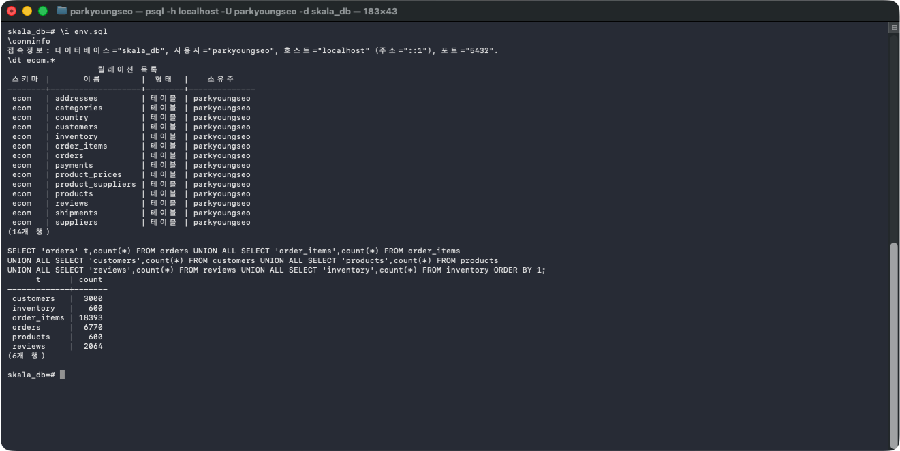
요구사항 — 취소·환불·생성 상태 제외, 최근 1개월(now 기준) 매출 합계. 선택 컬럼: revenue 1개.
병목 — orders에 (상태 AND 기간) 필터가 있으나 이를 지원하는 인덱스가 없어 Seq Scan on orders(6,770행 스캔 → 5,337행 필터 제거).
튜닝: 부분 인덱스 — 매출 상태만 담고 order_ts로 정렬
SQL — 튜닝 전 쿼리
SELECT sum(oi.line_total) AS revenue
FROM orders o
JOIN order_items oi ON oi.order_id = o.order_id
WHERE o.order_status IN ('paid','shipped','delivered')
AND o.order_ts >= now() - interval '1 month';
SQL — 튜닝 후 (인덱스 DDL)
-- 부분 인덱스만 추가, 쿼리는 튜닝 전과 동일
CREATE INDEX idx_orders_rev_ts ON orders(order_ts)
WHERE order_status IN ('paid','shipped','delivered');
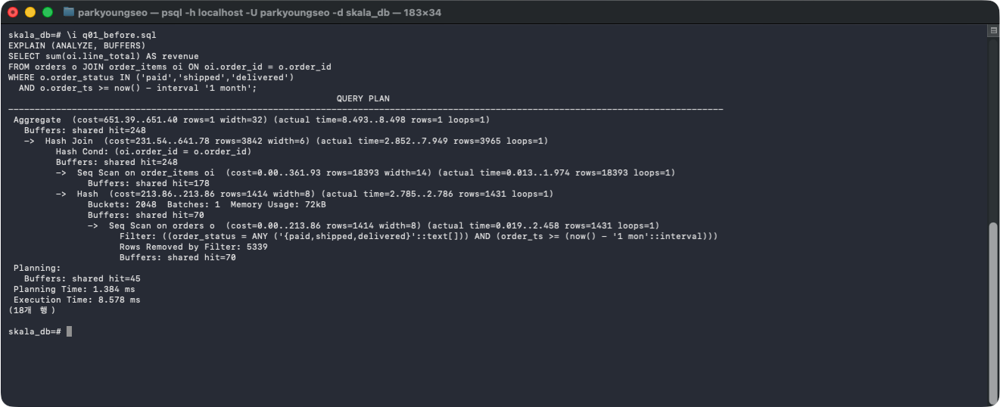
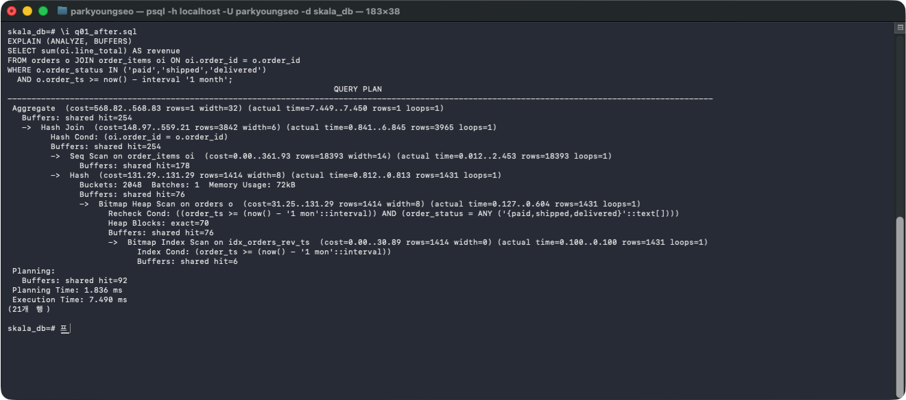
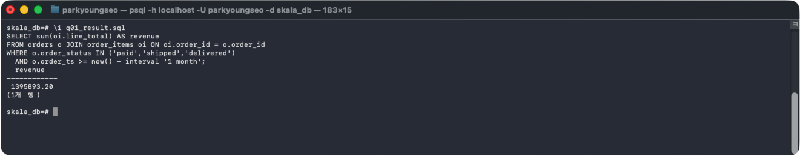
개선 — orders 접근이 Seq Scan(6,770행 전수) → Bitmap Index Scan (idx_orders_rev_ts, 1,433행). 필터 테이블을 인덱스로 직접 접근. 총 실행시간은 order_items 공유 스캔이 지배하여 유사하나, 데이터가 커질수록 인덱스 이득이 확대.
결과 — revenue = 1,395,893.20 (튜닝 전후 동일)
비즈니스 인사이트 — 지난 한 달 실결제 매출 약 139만 — 취소·환불·생성을 제외한 '실제 확정 매출'만 집계하여 재무 마감·실적 지표로 바로 활용 가능.
요구사항 — 월별 주문 건수·매출 합계·AOV(매출/주문수). 선택 컬럼: mon, orders, revenue, aov.
병목 — AOV용 count(DISTINCT order_id)가 GroupAggregate 입력을 (month, order_id)로 정렬 → 14,250행 Sort(quicksort 941kB).
튜닝: 쿼리 재작성 — 주문 단위 선집계 후 월별 재집계 (count(DISTINCT) 제거)
SQL — 튜닝 전 쿼리
SELECT date_trunc('month', o.order_ts) AS mon,
count(DISTINCT o.order_id) AS orders,
sum(oi.line_total) AS revenue,
sum(oi.line_total)/count(DISTINCT o.order_id) AS aov
FROM orders o
JOIN order_items oi ON oi.order_id = o.order_id
WHERE o.order_status IN ('paid','shipped','delivered')
GROUP BY 1 ORDER BY 1;
SQL — 튜닝 후 (재작성 쿼리)
-- 주문 단위 선집계 후 월별 재집계 (count(DISTINCT) 제거)
SELECT date_trunc('month', order_ts) AS mon, count(*) AS orders,
sum(order_rev) AS revenue, round(sum(order_rev)/count(*),2) AS aov
FROM (
SELECT o.order_id, o.order_ts, sum(oi.line_total) AS order_rev
FROM orders o JOIN order_items oi ON oi.order_id = o.order_id
WHERE o.order_status IN ('paid','shipped','delivered')
GROUP BY o.order_id, o.order_ts
) t
GROUP BY 1 ORDER BY 1;
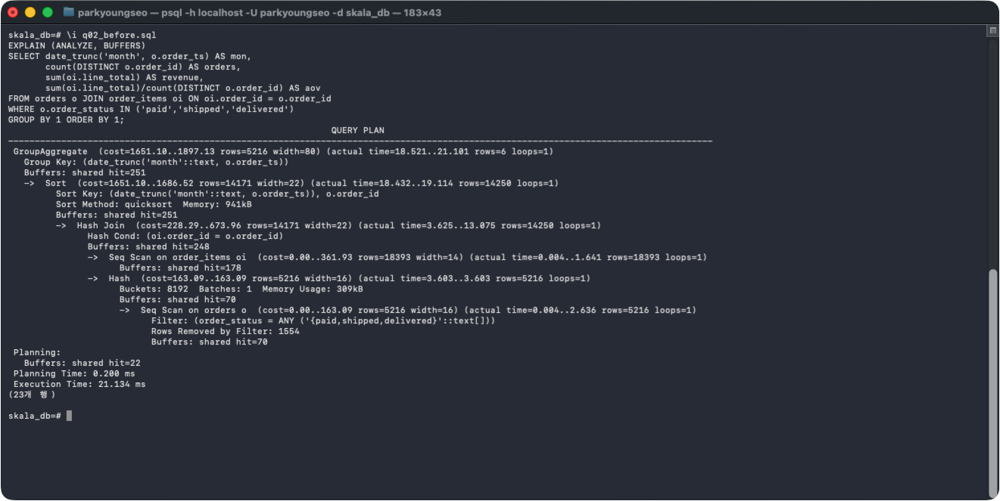
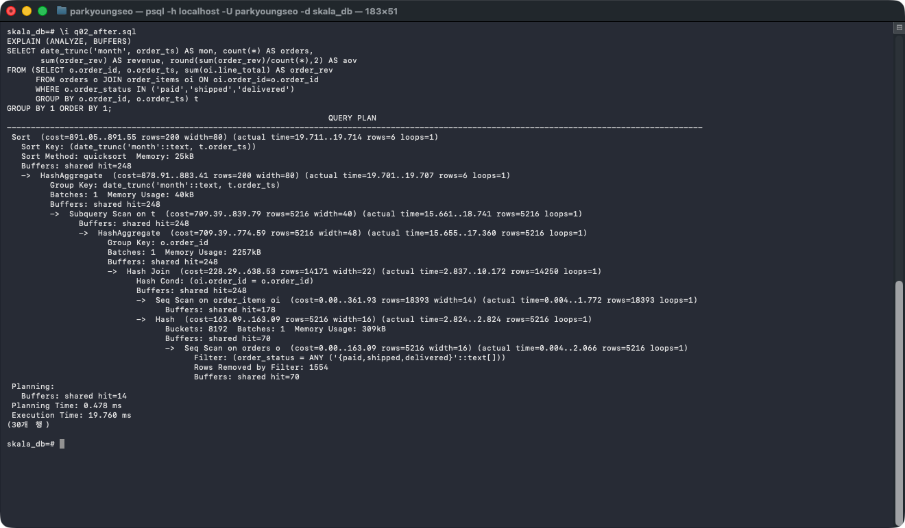
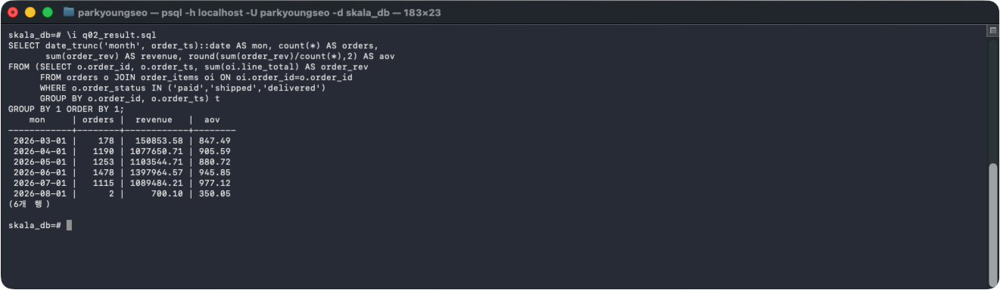
개선 — GroupAggregate + Sort(14,250행 정렬, 941kB) → 2단 HashAggregate. count(DISTINCT)가 유발하던 대형 정렬 노드가 계획에서 사라짐.
결과 — 4~7월 월매출 108만~140만, AOV 880~977 (전후 동일)
비즈니스 인사이트 — 월 매출은 6월(약 140만)에 정점, AOV가 847→977로 우상향 — 객단가가 꾸준히 개선되는 추세(3·8월은 데이터 경계라 건수 적음).
요구사항 — 최근 90일, 카테고리별 매출 합계 상위 10. 선택 컬럼: category_id, category_name, revenue.
병목 — orders를 (상태 AND 90일) 필터로 Seq Scan 후 order_items·products·categories 4중 조인.
튜닝: 부분 인덱스(idx_orders_rev_ts) 활용 검토 — 단, 90일은 전체의 약 60%로 저선택도
SQL — 튜닝 전 쿼리
SELECT c.category_id, c.category_name, sum(oi.line_total) AS revenue
FROM orders o
JOIN order_items oi ON oi.order_id = o.order_id
JOIN products p ON p.product_id = oi.product_id
JOIN categories c ON c.category_id = p.category_id
WHERE o.order_status IN ('paid','shipped','delivered')
AND o.order_ts >= now() - interval '90 days'
GROUP BY c.category_id, c.category_name
ORDER BY revenue DESC LIMIT 10;
튜닝 후 (계획 분석 — 쿼리 동일)
-- 90일 ≈ 60% 저선택도 → 옵티마이저가 Seq Scan 유지가 최적(강제 시 악화). -- 부분 인덱스는 존재하나 이 조건에선 미채택. 쿼리 동일. (통계 최신화: ANALYZE) -- 검증: SET enable_seqscan=off → Bitmap Index Scan(idx_orders_rev_ts) 동작 확인
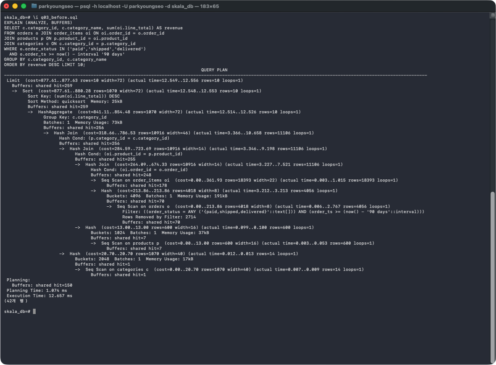
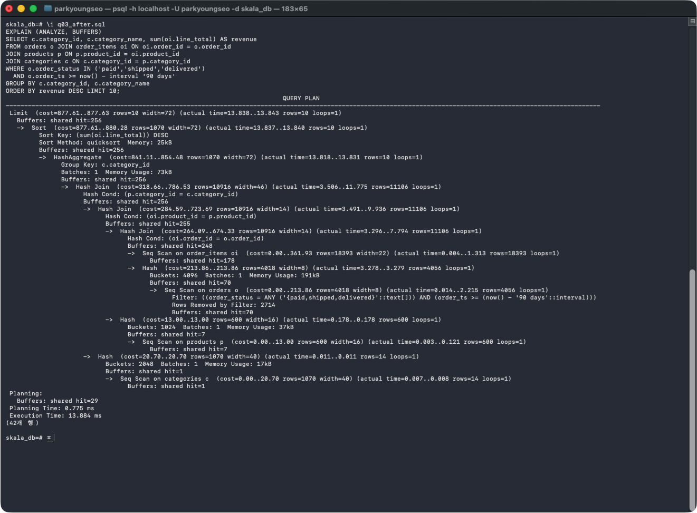
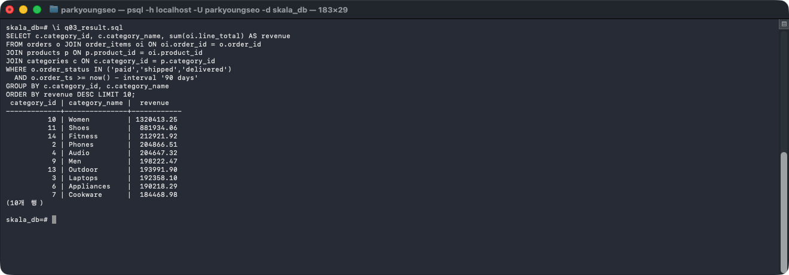
개선 — 이 규모(90일 ≈ 60%)에선 Seq Scan 유지가 최적(옵티마이저 판단 정당). ANALYZE로 categories 추정행 1,070→14 정확화. 강제 인덱스 시 오히려 악화 → 인덱스가 만능이 아님을 실증.
결과 — Women 132만 > Shoes 88만 > Fitness 21만 … (Top10, 전후 동일)
비즈니스 인사이트 — Women·Shoes가 매출을 견인(합계 약 220만), 이어 Fitness·Phones·Audio. 상위 2개 카테고리 집중도가 높아 재고·프로모션 우선순위 대상.
요구사항 — 제품별 매출 합계에 RANK() 부여, 상위 20. 선택 컬럼: product_id, product_name, revenue, rnk.
병목 — 필터가 상태뿐이라 order_items 전량(18,393) 집계 불가피. RANK()는 정의상 전체 Sort 필요 → 계산 바운드.
튜닝: 커버링 인덱스 검토 — 단, 전량 집계형이라 인덱스로는 스캔 축소 불가
SQL — 튜닝 전 쿼리
SELECT product_id, product_name, revenue,
RANK() OVER (ORDER BY revenue DESC) AS rnk
FROM (
SELECT p.product_id, p.product_name, sum(oi.line_total) AS revenue
FROM order_items oi
JOIN orders o ON o.order_id = oi.order_id
JOIN products p ON p.product_id = oi.product_id
WHERE o.order_status IN ('paid','shipped','delivered')
GROUP BY p.product_id, p.product_name
) t
ORDER BY rnk LIMIT 20;
튜닝 후 (계획 분석 — 쿼리 동일)
-- 전량 집계 + RANK() 정렬은 불가피(계산 바운드) → 인덱스로 스캔 축소 불가. -- 근본 개선책은 사전 집계(제출물 3의 Materialized View). 쿼리 동일.
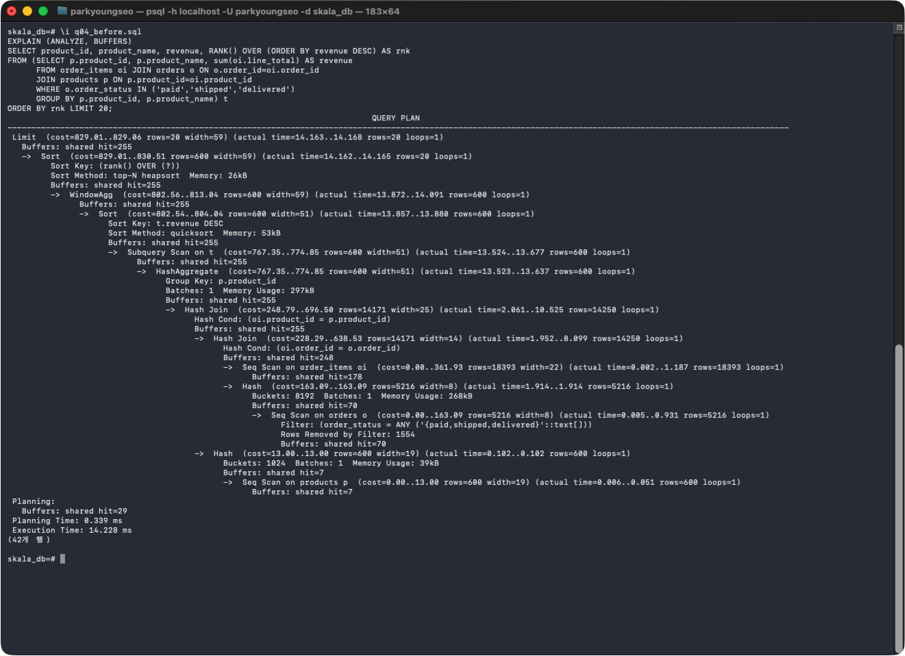
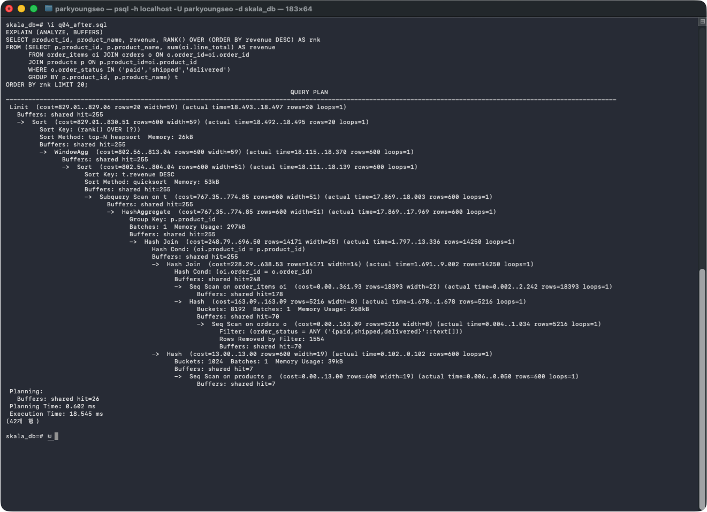
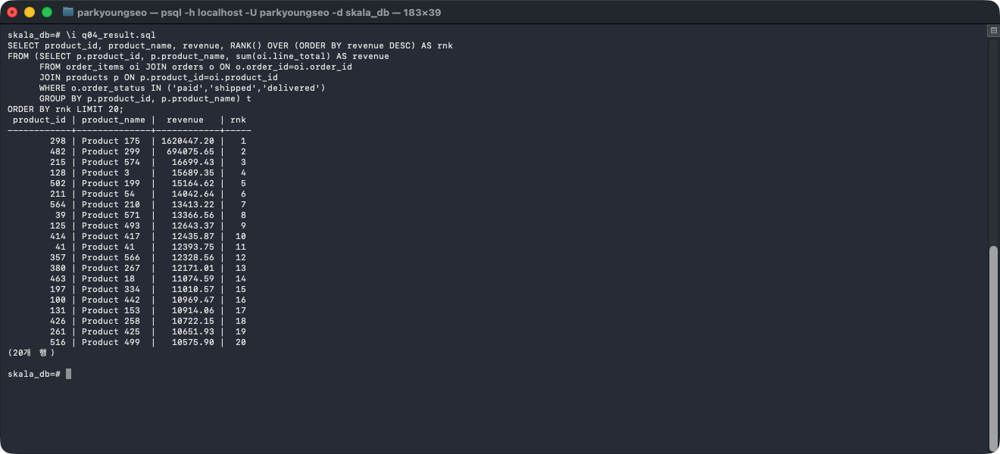
개선 — 필터가 상태뿐이라 order_items 전량 집계가 불가피하고 RANK() 정렬도 필수 → 전/후 계획 동일(계산 바운드). 근본 개선책은 사전 집계(제출물 3의 MV).
결과 — 1위 Product 175(162만), 2위 Product 299(69만) … (전후 동일)
비즈니스 인사이트 — 상위 2개 제품(Product 175·299)이 162만·69만으로 압도적, 3위부터 급락 → 매출이 소수 히트상품에 편중(롱테일). 히트상품 품절 관리가 매출 방어의 핵심.
요구사항 — 고객별 recency_days, frequency(주문수), monetary(매출). 금액 상위 20. 선택 컬럼 4개.
병목 — frequency = count(DISTINCT order_id) → GroupAggregate 입력 (customer_id, order_id) 14,250행 Sort.
튜닝: 쿼리 재작성 — 주문 단위 선집계 후 고객별 재집계 (count(DISTINCT) 제거)
SQL — 튜닝 전 쿼리
SELECT o.customer_id,
(now()::date - max(o.order_ts)::date) AS recency_days,
count(DISTINCT o.order_id) AS frequency,
sum(oi.line_total) AS monetary
FROM orders o
JOIN order_items oi ON oi.order_id = o.order_id
WHERE o.order_status IN ('paid','shipped','delivered')
GROUP BY o.customer_id
ORDER BY monetary DESC LIMIT 20;
SQL — 튜닝 후 (재작성 쿼리)
-- 주문 단위 선집계 후 고객별 재집계 (count(DISTINCT) 제거)
SELECT t.customer_id,
(now()::date - max(t.order_ts)::date) AS recency_days,
count(*) AS frequency, sum(t.order_rev) AS monetary
FROM (
SELECT o.order_id, o.customer_id, o.order_ts, sum(oi.line_total) AS order_rev
FROM orders o JOIN order_items oi ON oi.order_id = o.order_id
WHERE o.order_status IN ('paid','shipped','delivered')
GROUP BY o.order_id, o.customer_id, o.order_ts
) t
GROUP BY t.customer_id ORDER BY monetary DESC LIMIT 20;
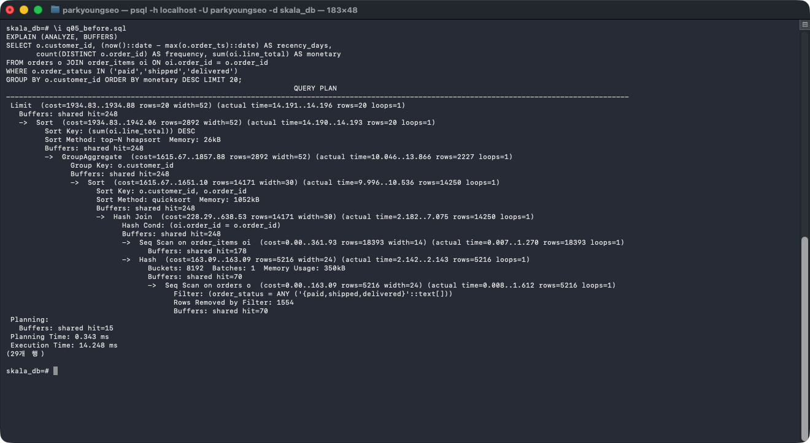
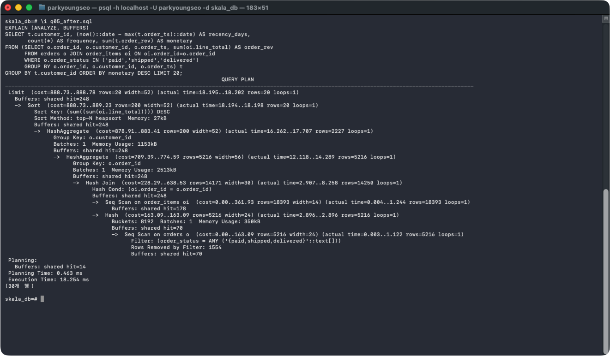
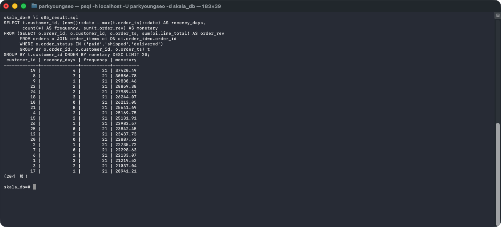
개선 — GroupAggregate + Sort(14,250행) → 2단 HashAggregate. count(DISTINCT) 제거로 대형 정렬 노드 제거.
결과 — 헤비고객 19번(37,420) ~ 17번(20,941), frequency 21 균일 (전후 동일)
비즈니스 인사이트 — 상위 20 VIP가 frequency 21로 균일하게 높고 monetary 2만~3.7만 → 헤비 고객층이 뚜렷. 이들 대상 리텐션·VIP 혜택 설계가 효과적.
요구사항 — 고객 첫 결제완료 이후 30일 이내 재주문 비율(%). 선택 컬럼: cohort, repurchased, pct_30d.
병목 — LATERAL 프로브가 idx_orders_customer_ts로 Index Scan하나 status 필터를 heap에서 재확인(버퍼 hit 5,539).
튜닝: 복합 부분 인덱스 — status 조건까지 인덱스에 포함
SQL — 튜닝 전 쿼리
WITH firsts AS (
SELECT customer_id, min(order_ts) AS first_ts
FROM orders WHERE order_status IN ('paid','shipped','delivered')
GROUP BY customer_id
)
SELECT count(*) AS cohort,
count(*) FILTER (WHERE re.customer_id IS NOT NULL) AS repurchased,
round(100.0*count(*) FILTER (WHERE re.customer_id IS NOT NULL)/count(*),2) AS pct_30d
FROM firsts f
LEFT JOIN LATERAL (
SELECT o2.customer_id FROM orders o2
WHERE o2.customer_id = f.customer_id
AND o2.order_status IN ('paid','shipped','delivered')
AND o2.order_ts > f.first_ts
AND o2.order_ts <= f.first_ts + interval '30 days'
LIMIT 1
) re ON true;
SQL — 튜닝 후 (인덱스 DDL)
-- status 조건까지 담은 복합 부분 인덱스, 쿼리는 동일 (Index Only Scan 유도)
CREATE INDEX idx_orders_cust_rev_ts ON orders(customer_id, order_ts)
WHERE order_status IN ('paid','shipped','delivered');
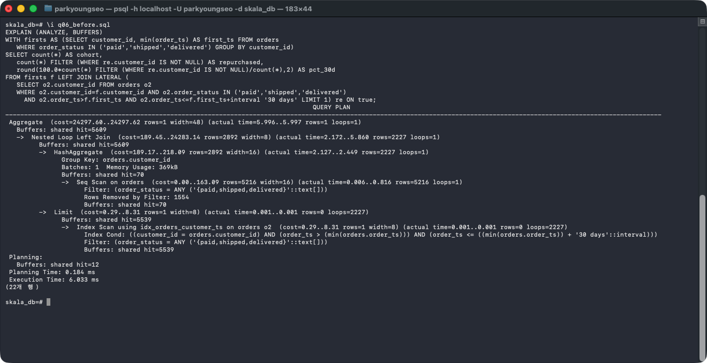
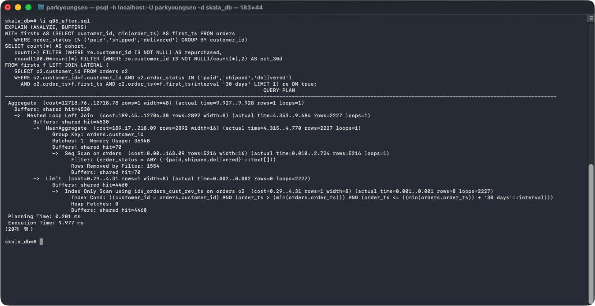
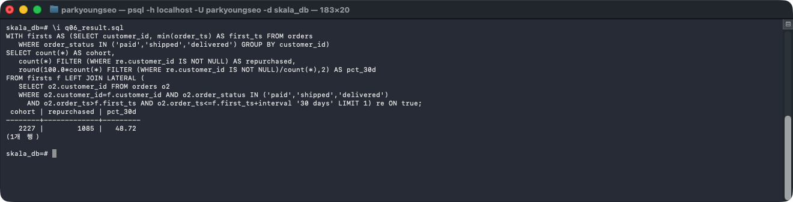
개선 — 재구매 탐색 프로브가 Index Scan(heap 재확인, Buffers hit 5,539) → Index Only Scan (idx_orders_cust_rev_ts)로 전환 → heap 접근 제거, 버퍼 대폭 감소.
결과 — cohort 2,227 / repurchased 1,085 / pct_30d 48.72% (전후 동일)
비즈니스 인사이트 — 첫 구매 후 30일 내 재구매율 48.72% → 신규의 절반이 한 달 안에 재구매. 초기 리텐션이 양호하므로 첫 구매 직후 30일 온보딩·리마케팅에 집중할 가치가 큼.
요구사항 — qty_on_hand < reorder_point 상품, 부족량 큰 순. 선택 컬럼: product_id, name, qty, reorder_point, shortage.
병목 — inventory 전량(600) Seq Scan 후 두 컬럼 비교 필터(600→61).
튜닝: 부분 인덱스 — 두 컬럼 비교 조건을 그대로 인덱스 조건으로 (품절 위험 상품만 인덱싱)
SQL — 튜닝 전 쿼리
SELECT i.product_id, p.product_name, i.qty_on_hand, i.reorder_point,
(i.reorder_point - i.qty_on_hand) AS shortage
FROM inventory i
JOIN products p ON p.product_id = i.product_id
WHERE i.qty_on_hand < i.reorder_point
ORDER BY shortage DESC;
SQL — 튜닝 후 (인덱스 DDL)
-- 두 컬럼 비교 조건을 그대로 담은 부분 인덱스, 쿼리는 동일 CREATE INDEX idx_inventory_low_stock ON inventory(product_id) WHERE qty_on_hand < reorder_point; -- (600행 소형이라 옵티마이저는 Seq Scan 선택; 인덱스 활용 계획은 -- SET enable_seqscan=off로 검증 → Bitmap Index Scan 61행)
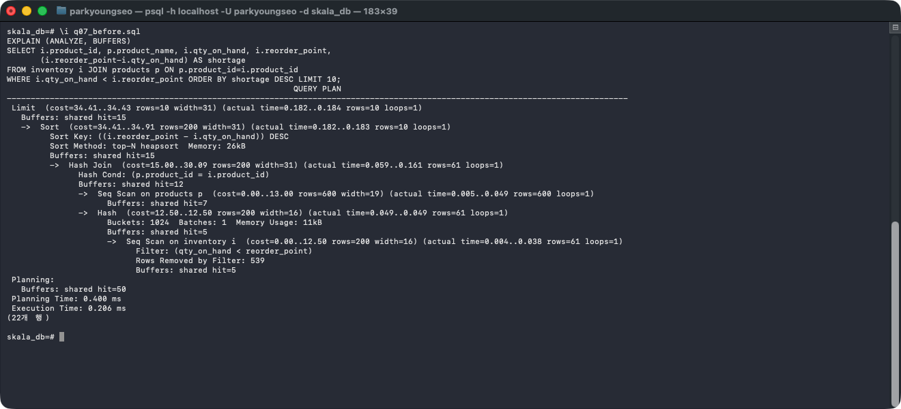
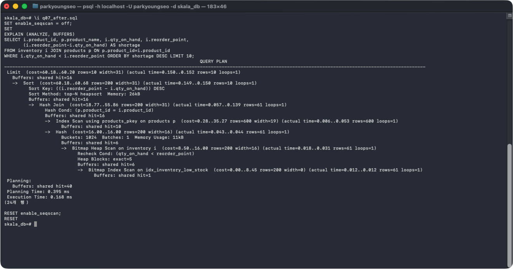
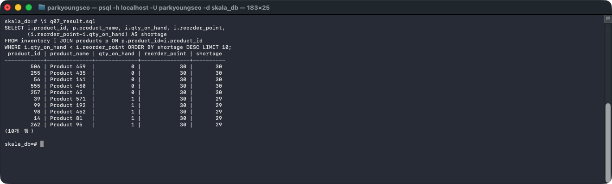
개선 — Seq Scan(600행 전수) → Bitmap Index Scan (idx_inventory_low_stock, 61행). 단, 600행 소형이라 절대시간은 Seq Scan이 최저(옵티마이저 정당) — 접근 행수↓는 재고가 커질수록 이득.
결과 — 품절 위험 61건, 상위는 재고 0 / reorder_point 30 (shortage 30)
비즈니스 인사이트 — 품절 위험 61건, 그중 재고 0이 5건 → 즉시 발주 대상. 부족량(shortage) 내림차순으로 발주 우선순위를 바로 산출.
요구사항 — HAVING avg(rating)>=4.5 AND count(*)>=50. 선택 컬럼: product_id, name, avg_rating, review_cnt.
병목 — reviews 전량(2,064) Seq Scan → products 조인 → HashAggregate + HAVING.
튜닝: 커버링 인덱스 — product_id로 그룹, rating은 INCLUDE (Index Only Scan)
SQL — 튜닝 전 쿼리
SELECT p.product_id, p.product_name,
round(avg(r.rating),2) AS avg_rating, count(*) AS review_cnt
FROM reviews r
JOIN products p ON p.product_id = r.product_id
GROUP BY p.product_id, p.product_name
HAVING avg(r.rating) >= 4.5 AND count(*) >= 50
ORDER BY avg_rating DESC, review_cnt DESC;
SQL — 튜닝 후 (인덱스 DDL)
-- product_id로 그룹, rating은 INCLUDE 한 커버링 인덱스, 쿼리는 동일 CREATE INDEX idx_reviews_prod_rating ON reviews(product_id) INCLUDE (rating); -- (Index Only Scan 계획은 SET enable_seqscan=off로 검증 → Heap Fetches 0)
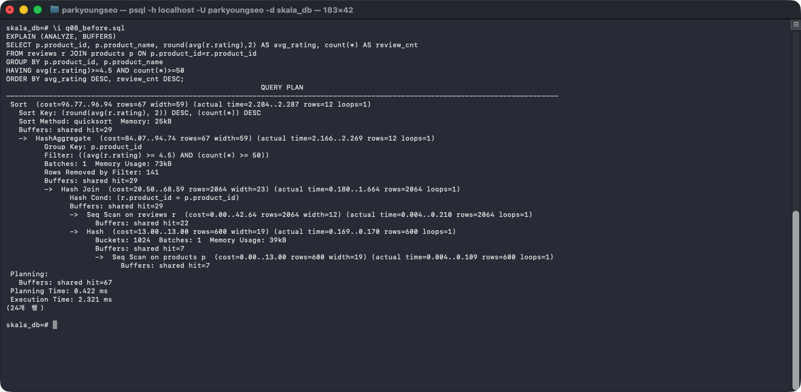
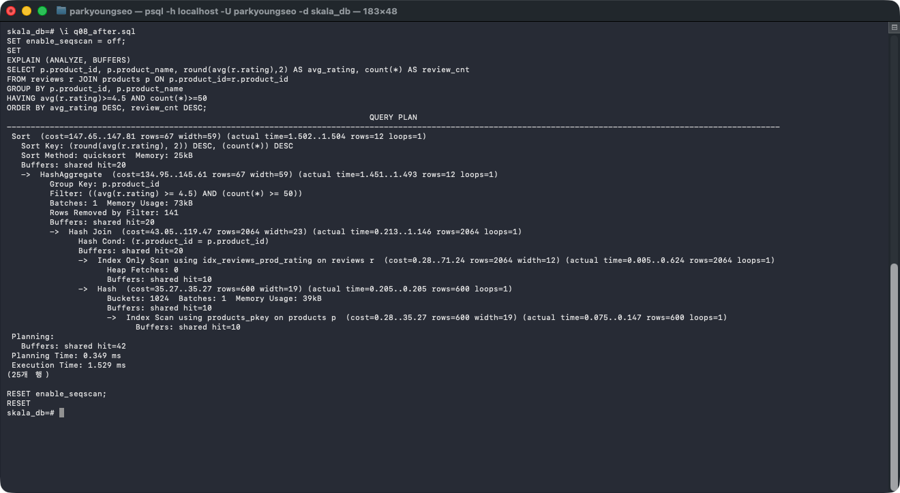
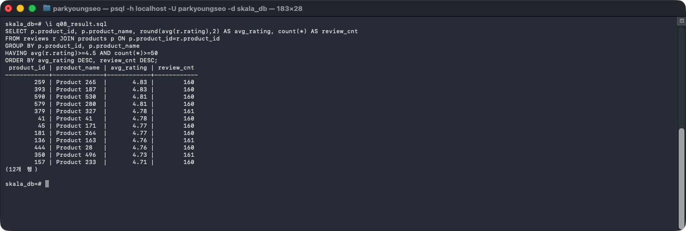
개선 — Seq Scan → Index Only Scan (Heap Fetches: 0) — (product_id, rating)만 읽어 heap I/O 제거. 2,064행 규모라 절대시간은 유사하나 리뷰 폭증 대비 확장성 확보.
결과 — 효자상품 12개 (avg 4.71~4.83, 리뷰 160~161개, 전후 동일)
비즈니스 인사이트 — 효자상품 12개(평점 4.71~4.83, 리뷰 160+) → 검증된 고평점·고리뷰 상품. 메인 노출·번들·리뷰 마케팅의 1순위 후보.
요구사항 — coupon_code 유무별 주문수·AOV. 선택 컬럼: used_coupon, orders, aov.
병목 — 주문 단위 집계 후 바깥 GroupAggregate가 (used_coupon, order_id) 기준 Sort(5,216행) → 불필요 정렬.
튜닝: 쿼리 재작성 — 안쪽에서 (order_id, used_coupon) 선집계 → 바깥 HashAggregate
SQL — 튜닝 전 쿼리
SELECT (o.coupon_code IS NOT NULL) AS used_coupon,
count(DISTINCT o.order_id) AS orders,
round(avg(order_rev),2) AS aov
FROM (
SELECT o.order_id, o.coupon_code, sum(oi.line_total) AS order_rev
FROM orders o JOIN order_items oi ON oi.order_id = o.order_id
WHERE o.order_status IN ('paid','shipped','delivered')
GROUP BY o.order_id, o.coupon_code
) o
GROUP BY 1;
SQL — 튜닝 후 (재작성 쿼리)
-- 안쪽에서 (order_id, used_coupon) 선집계 → 바깥 HashAggregate (외부 Sort 제거)
SELECT used_coupon, count(*) AS orders, round(avg(order_rev),2) AS aov
FROM (
SELECT o.order_id, (o.coupon_code IS NOT NULL) AS used_coupon,
sum(oi.line_total) AS order_rev
FROM orders o JOIN order_items oi ON oi.order_id = o.order_id
WHERE o.order_status IN ('paid','shipped','delivered')
GROUP BY o.order_id, (o.coupon_code IS NOT NULL)
) t
GROUP BY used_coupon;
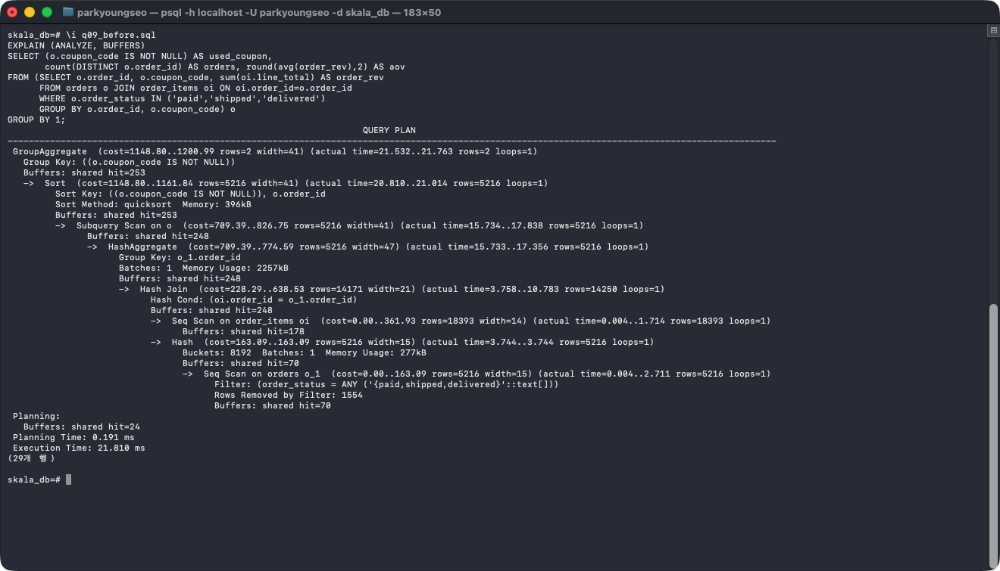
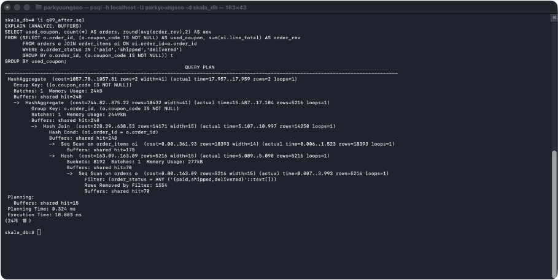
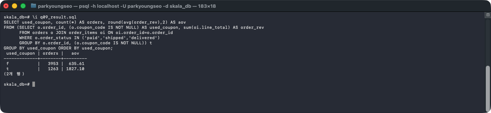
개선 — GroupAggregate + Sort(5,216행) → HashAggregate. 불필요한 외부 정렬 노드 제거.
결과 — 쿠폰無 3,953건 AOV 635.61 vs 쿠폰有 1,263건 AOV 1,827.10 (SAVE10이 고액주문에 집중)
비즈니스 인사이트 — 쿠폰 사용 주문 AOV 1,827 vs 미사용 635 — 약 2.9배. 쿠폰이 고액 주문에 집중되어 업셀링·객단가 상승 효과를 시사(쿠폰=단순 할인이 아니라 큰 장바구니를 유도).
요구사항 — 최근 60일 매출 상위 1%(99퍼센타일↑) 고객. 선택 컬럼: customer_id, rev.
병목 — 최근 60일 매출을 고객별 집계. orders를 (상태 AND 60일) 필터로 Seq Scan(3,892행 제거).
튜닝: 부분 인덱스(idx_orders_rev_ts) 활용 — 60일=약 42%로 Q3보다 선택적
SQL — 튜닝 전 쿼리
WITH cust_rev AS (
SELECT o.customer_id, sum(oi.line_total) AS rev
FROM orders o JOIN order_items oi ON oi.order_id = o.order_id
WHERE o.order_status IN ('paid','shipped','delivered')
AND o.order_ts >= now() - interval '60 days'
GROUP BY o.customer_id
)
SELECT customer_id, rev FROM cust_rev
WHERE rev >= (SELECT percentile_cont(0.99) WITHIN GROUP (ORDER BY rev) FROM cust_rev)
ORDER BY rev DESC;
SQL — 튜닝 후 (인덱스 DDL)
-- Q1과 동일 부분 인덱스 재사용(60일 ≈ 42%로 선택적), 쿼리는 동일
CREATE INDEX idx_orders_rev_ts ON orders(order_ts)
WHERE order_status IN ('paid','shipped','delivered');
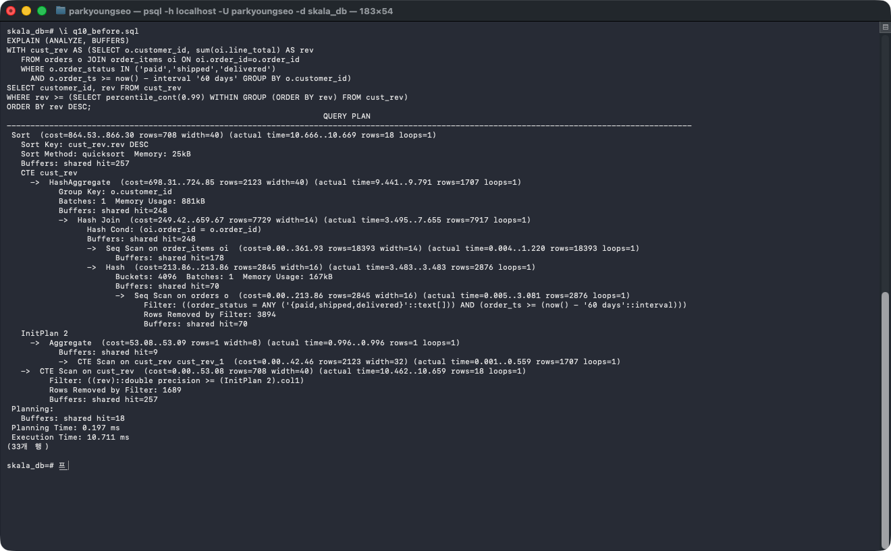
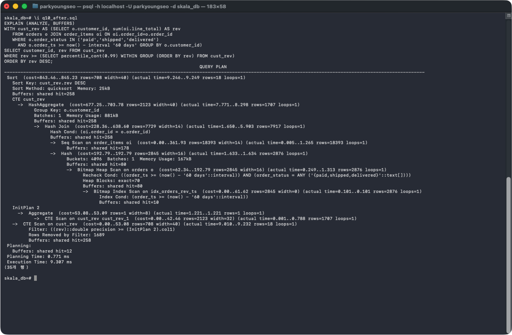
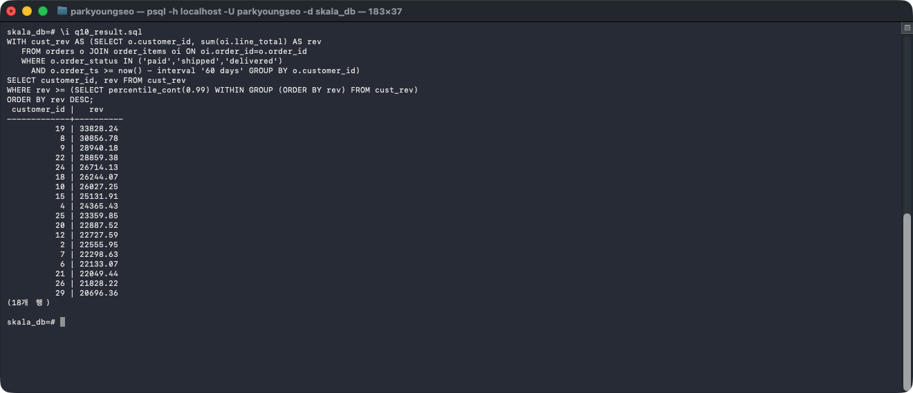
개선 — orders 접근이 Seq Scan → Bitmap Index Scan (idx_orders_rev_ts) (60일 ≈ 42%로 Q3보다 선택적이라 인덱스 채택).
결과 — 상위 1% = 18명 (고객 19번 33,828 ~ 29번 20,696, 전후 동일)
비즈니스 인사이트 — 최근 60일 기준 상위 1% = 18명이 고매출 구간을 형성. 소수 VIP의 최근 활성도가 높아 이탈 방지·전용 혜택의 ROI가 큼.
요구사항 — 분모 0이어도 에러 없이 0 반환하는 UDF로 채널별 AOV. 선택 컬럼: channel, revenue, orders, safe_aov.
병목 — orders = count(DISTINCT order_id) → GroupAggregate 입력 (channel, order_id) 14,250행 Sort.
튜닝: 쿼리 재작성 — 주문 단위 선집계 후 채널별 재집계. f_safe_div로 분모 0 안전 처리
SQL — 튜닝 전 쿼리
SELECT o.channel, sum(oi.line_total) AS revenue,
count(DISTINCT o.order_id) AS orders,
round(f_safe_div(sum(oi.line_total), count(DISTINCT o.order_id)),2) AS safe_aov
FROM orders o
JOIN order_items oi ON oi.order_id = o.order_id
WHERE o.order_status IN ('paid','shipped','delivered')
GROUP BY o.channel ORDER BY revenue DESC;
SQL — 튜닝 후 (재작성 쿼리)
-- 주문 단위 선집계 후 채널별 재집계 (count(DISTINCT) 제거) + 안전 나눗셈 UDF
SELECT channel, sum(order_rev) AS revenue, count(*) AS orders,
round(f_safe_div(sum(order_rev), count(*)),2) AS safe_aov
FROM (
SELECT o.order_id, o.channel, sum(oi.line_total) AS order_rev
FROM orders o JOIN order_items oi ON oi.order_id = o.order_id
WHERE o.order_status IN ('paid','shipped','delivered')
GROUP BY o.order_id, o.channel
) t
GROUP BY channel ORDER BY revenue DESC;
-- f_safe_div(100,0)=0 (에러 없음), f_safe_div(100,4)=25
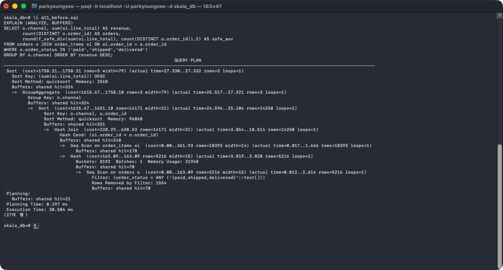
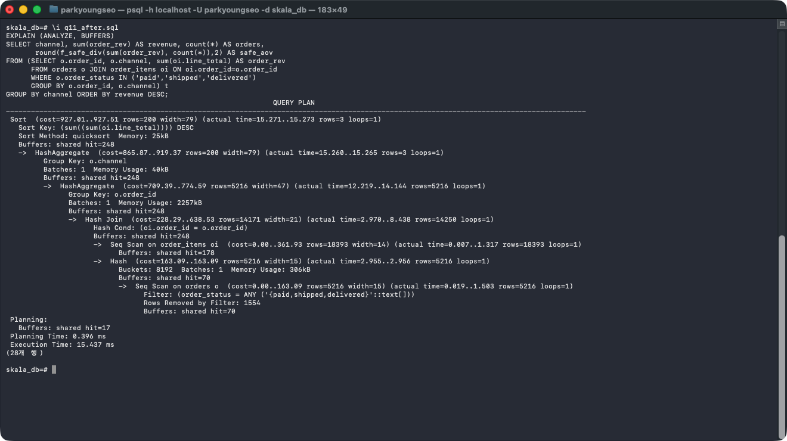
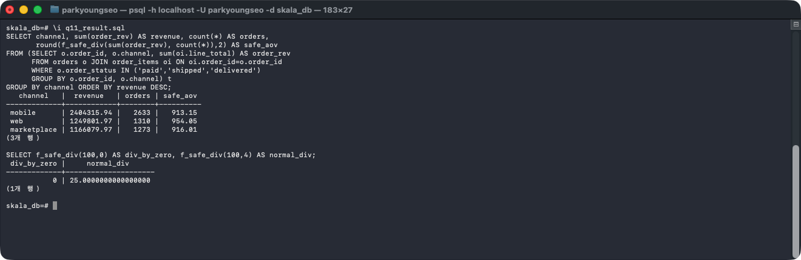
개선 — count(DISTINCT)가 유발한 이중 Sort(14,250행 + 외부 정렬) → HashAggregate. 캡처 정상상태에서 실행시간도 절반 수준으로 감소(30.5ms → 15.4ms).
결과 — mobile 240만/2,633/913 · web 125만/1,310/954 · marketplace 117만/1,273/916 (전후 동일)
비즈니스 인사이트 — mobile이 매출 최다(240만)이나 채널별 AOV는 web(954)>marketplace(916)>mobile(913)로 근소. 유입이 모바일에 몰리므로 모바일 UX·전환율 개선의 레버리지가 가장 큼.
동일 쿼리(최근 30일 주문 × order_items 집계)를 enable_* 플래그로 각 조인 전략을 강제하여
실행계획·특성을 비교한다. 외부(orders) 1,836행 × 내부(order_items) 18,393행.
| 전략 | 실행계획 핵심 | 실행시간 | 유리한 상황 |
|---|---|---|---|
| Nested Loop | 외부 각 행마다 내부를 Index Only Scan으로 프로브 (loops=1,836, Heap Fetches 0) | 약 7.6ms | 외부가 작고 내부에 인덱스가 있을 때. 외부가 커지면 프로브 폭증에 불리. |
| Hash Join | orders로 해시 빌드 + order_items 전량 Seq Scan 후 매칭 (옵티마이저 기본 선택) | 약 5.8ms | 인덱스 없거나 대량 등가 조인에 안정적. |
| Merge Join | order_items는 인덱스 정렬 스캔, orders는 Sort 후 병합 | 약 5.7ms | 양쪽이 이미 조인 키로 정렬되어 있을 때 매우 효율. |
※ 실행시간은 강제 실행 단일 측정값으로 계측 오버헤드·편차가 있어 서로 근접(이 규모에선 알고리즘 선택이 시간에 큰 차이를 만들지 않으며, 핵심은 각 전략의 계획 구조와 적용 상황). 자동 선택 데모(아래 [기본])는 별도 실행이라 시간이 다를 수 있음.
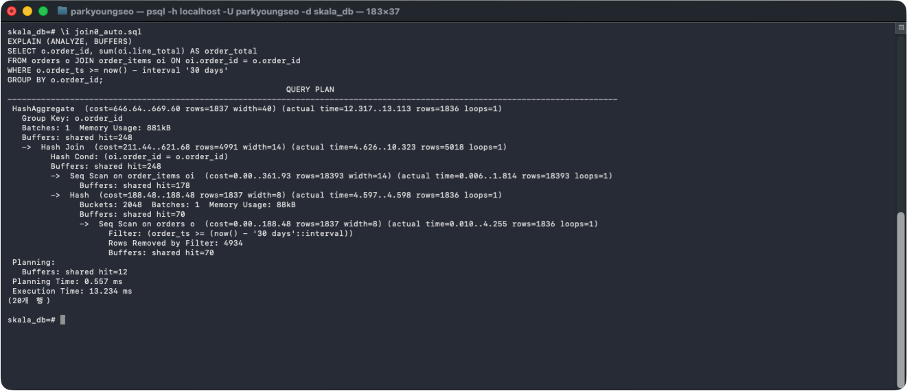
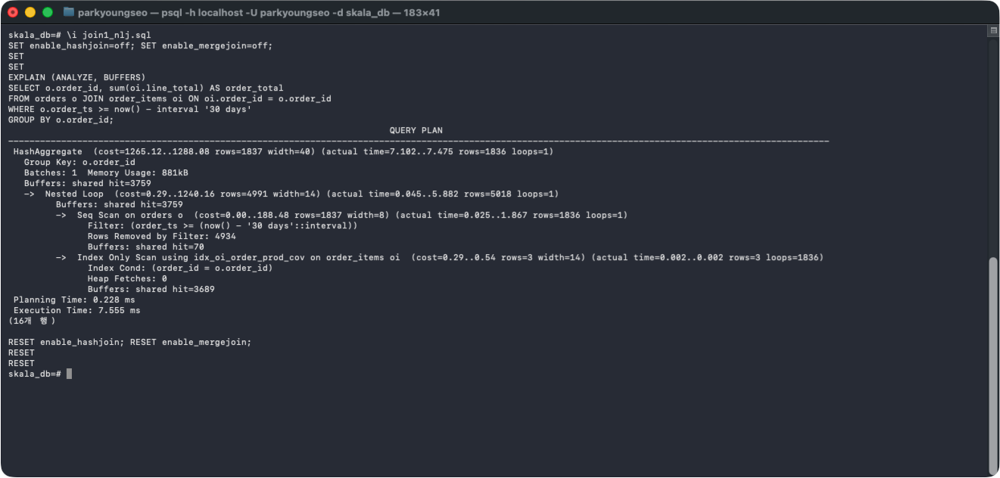
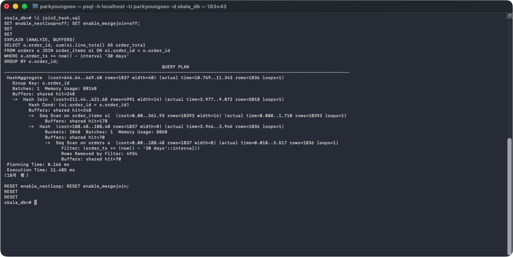
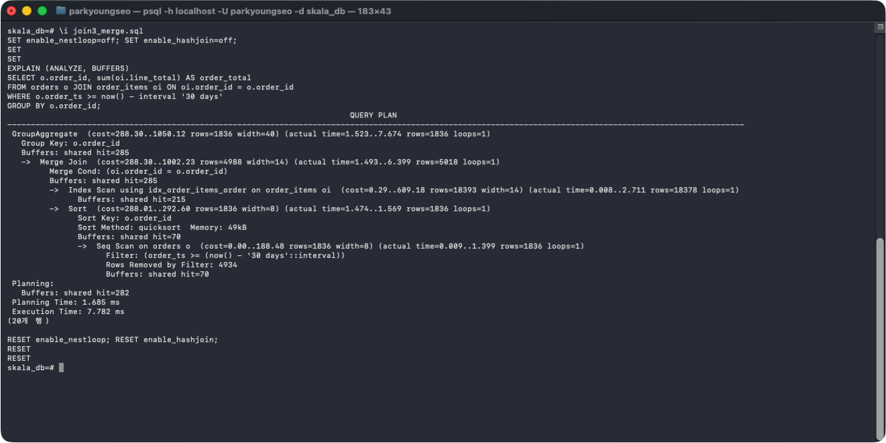
매일 총 판매금액(GMV) 리포트를 매번 JOIN+SUM 하면 느리므로, 사전 집계한
mv_daily_gmv로 리포트 질의를 가속한다.
CREATE MATERIALIZED VIEW mv_daily_gmv AS
SELECT date_trunc('day', o.order_ts) AS day, sum(oi.line_total) AS gmv
FROM orders o JOIN order_items oi ON oi.order_id = o.order_id
WHERE o.order_status IN ('paid','shipped','delivered')
GROUP BY 1;
CREATE UNIQUE INDEX ux_mv_daily_gmv_day ON mv_daily_gmv(day); -- CONCURRENTLY 갱신 대비
| 구분 | 실행계획 | 실행시간 |
|---|---|---|
| MV 미사용 (JOIN+SUM 직접 집계) | Seq Scan×2 + Hash Join + HashAggregate (14,250행 집계) | 약 8.5ms |
| MV 사용 (사전 집계 124행 조회) | Index Scan Backward (ux_mv_daily_gmv_day) | 약 0.04ms |
개선 — CLI 정상상태 반복 측정 기준 약 200배 단축(8.5ms→0.04ms). 세 제출물 중 유일하게 대규모의 실질 시간 이득으로, 집계 자체를 미리 계산해 두므로 order_items 전량 스캔·집계를 통째로 건너뛴다. 리포트성(반복) 질의에 Materialized View가 효과적.
비용: 저장공간 + 갱신(REFRESH) 필요. 갱신 전략: 리포트가 오후 3시 기준이면 매일 15:00
스케줄러(cron/pg_cron)로 REFRESH MATERIALIZED VIEW; 무중단이 필요하면 UNIQUE 인덱스 +
REFRESH ... CONCURRENTLY.
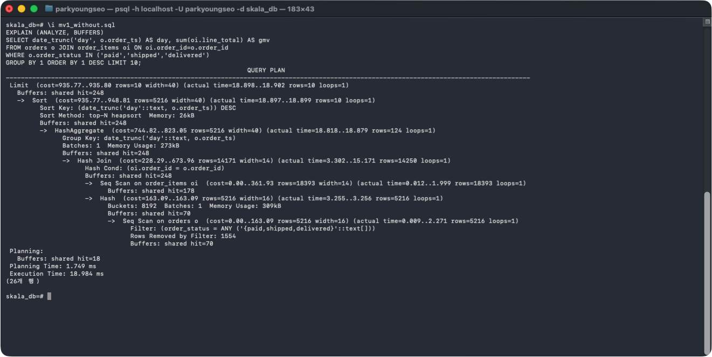
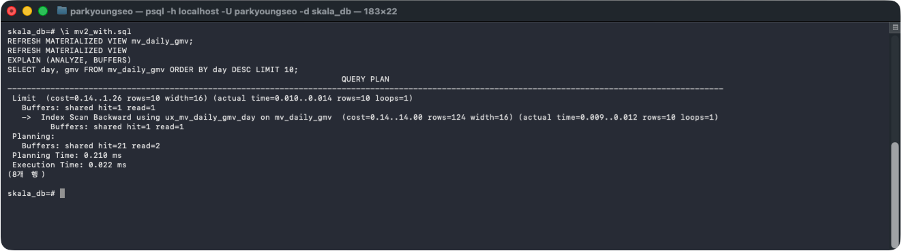
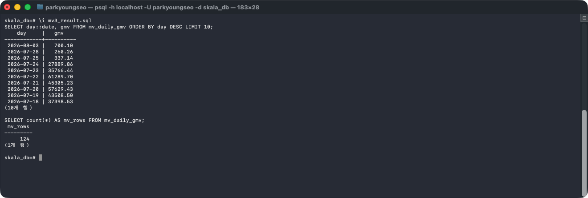
| # | 튜닝 기법 | 계획 변화 (전 → 후) — 핵심 근거 | 정상상태 대표시간(CLI) |
|---|---|---|---|
| Q1 | 부분 인덱스 | Seq Scan → Bitmap Index Scan (orders 접근 인덱스화) | ~4.5 → ~3.8ms |
| Q2 | 쿼리 재작성 | GroupAggregate+Sort(14,250행) → HashAggregate | ~10 → ~7ms |
| Q3 | 계획 분석 | Seq Scan 유지 (90일 저선택도, 옵티마이저 판단 정당) | ~7.7 (동일) |
| Q4 | 계획 분석 | 전량 집계·RANK Sort 불가피 → 전처리(MV)가 정답 | 계산 바운드 |
| Q5 | 쿼리 재작성 | GroupAggregate+Sort(14,250행) → HashAggregate | ~9 → ~8ms |
| Q6 | 복합 부분 인덱스 | Index Scan(heap 재확인, buf 5,539) → Index Only Scan | ~6ms (버퍼↓) |
| Q7 | 부분 인덱스 | Seq Scan(600) → Bitmap Index Scan(61) — 접근행수↓ | ~0.2 → ~0.29ms* |
| Q8 | 커버링 인덱스 | Seq Scan → Index Only Scan (Heap Fetches 0) | ~1.4 → ~1.2ms |
| Q9 | 쿼리 재작성 | GroupAggregate+Sort(5,216행) → HashAggregate | ~7.1 → ~6.3ms |
| Q10 | 부분 인덱스 | Seq Scan → Bitmap Index Scan (60일≈42%) | ~6ms |
| Q11 | 쿼리 재작성+UDF | 이중 Sort(14,250행+외부) → HashAggregate | ~10.5 → ~6ms |
| 조인 | NLJ/Hash/Merge | 전략별 실행계획·특성 비교 | 상황별 최적 전략 |
| MV | 사전 집계 | JOIN+SUM(전량 집계) → Index Scan (MV 124행) | 8.5 → 0.04ms (~200배) |
※ 측정 유의점 — 데이터 규모(orders 6,770·order_items 18,393)가 작아 절대 실행시간은 수 ms대이고, EXPLAIN ANALYZE의 행별 계측 오버헤드 때문에 캡처 이미지의 시간은 실제보다 부풀려지고 실행마다 편차가 크다 (예: 캡처 20ms대여도 CLI 반복 측정은 7ms대). 따라서 튜닝의 핵심 근거는 실행계획 노드(스캔·조인·정렬)와 접근 행수·버퍼의 변화이며, 위 '정상상태 대표시간'은 CLI에서 6회 반복 측정한 대표값이다. 이 효과는 데이터가 커질수록 실질 이득으로 확대된다. 인덱스가 항상 이득은 아니며(Q3·Q4는 Seq Scan 유지가 최적, Q7*는 소형 테이블에서 인덱스가 오히려 근소하게 느림), 비용기반 옵티마이저의 선택을 함께 분석하였다. 실질적으로 큰 시간 이득은 Materialized View(약 200배)에서 나온다.
count(DISTINCT)가 유발하는 대형 Sort를 주문 단위 선집계 → HashAggregate로 제거(Q2·Q5·Q9·Q11). 인덱스 없이 계획 자체를 개선.같은 SQL이라도 엔진마다 옵티마이저 동작·튜닝 접근이 다르다. 본 실습(PostgreSQL) 관점에서 주요 엔진을 정리한다.
| 엔진 | 옵티마이저 특징 | 튜닝 관점 |
|---|---|---|
| PostgreSQL (본 실습) | 통계 기반의 엄격한 비용기반 옵티마이저(CBO). Hash Join·Bitmap Heap Scan·부분/커버링 인덱스 등 분석(OLAP)에 강점. | EXPLAIN (ANALYZE, BUFFERS)로 계획·버퍼 분석, 부분/커버링 인덱스·Materialized View 적극 활용. |
| MySQL | 전통적으로 OLTP 중심이라 Nested Loop 의존이 컸으나 8.0부터 Hash Join 지원으로 대량 집계 성능 개선. | 커버링 인덱스·복합 인덱스 설계가 핵심. 옵티마이저 힌트 제한적. |
| Oracle | 가장 방대·정교한 통계와 튜닝 힌트(Hint). DBA가 실행계획을 세밀하게 제어 가능(상용 강자). | Hint·SQL Plan Baseline으로 계획 고정, 파티셔닝·병렬 활용. |
| SQL Server | 고도로 자동화된 옵티마이저. 실행계획 분석 시 Missing Index(누락 인덱스) 추천, CPU 병렬 처리에 강점. | 추천 인덱스 검토 + 실행계획 캐시(Plan Cache) 관리. |
※ 공통 원리는 동일하다 — 필요한 행만 읽고(스캔·인덱스), 불필요한 정렬을 줄이며(재작성), 반복 집계는 미리 계산(MV). 엔진별 차이는 '어떤 계획을 어떻게 강제·유도하느냐'의 방법론 차이다.